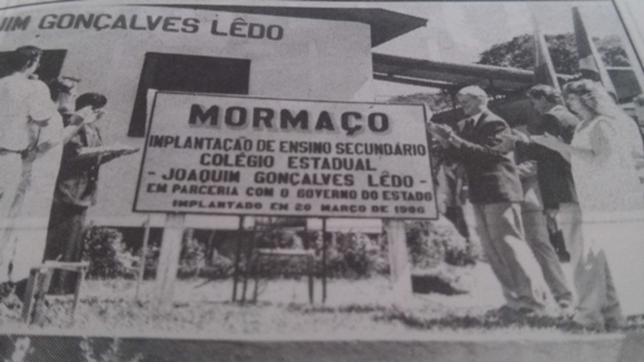

Resumo
Nasceu em Mormaço, no dia 09/05/2005, filha de dois professores, Adilson Kuhn e Rosangela Kuhn. Estudou de até 2022 na escola Estadual de Ensino médio Joaquim Gonçalvez Ledo, quando se formou e entrou para a Universidade de Passo Fundo, onde inicialmente fez dois semestres de Ciências biológicas (bacharelado) e depois se transferiu para Análise e desenvolvimento de sistemas, o curso que atualmente cursa.
Escola Joaquim Gonçalves Ledo